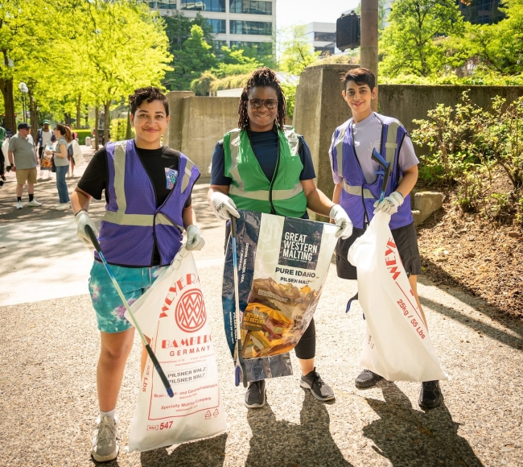
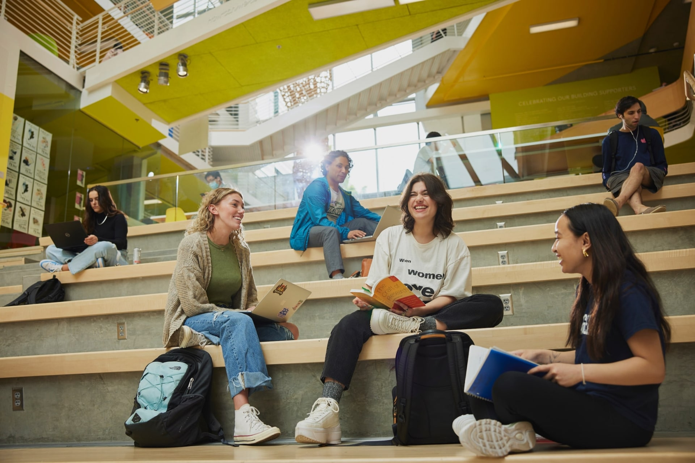

Colaboracion
Trabajo conjunto entre estudiantes, docentes y familias para construir soluciones, fortalecer proyectos y avanzar como comunidad.
Mas que educacion, somos una comunidad que impulsa el crecimiento personal, el aprendizaje compartido y el desarrollo integral de cada persona.
La comunidad CEFI es un espacio de crecimiento, aprendizaje y conexion donde cada persona puede aportar, desarrollarse y construir relaciones significativas. Aqui, la formacion no se limita a las clases: se fortalece en actividades compartidas, proyectos colaborativos y experiencias que enriquecen la vida personal y profesional.
Estudiantes, docentes, familias y aliados participan activamente en una cultura basada en la colaboracion, el respeto y el compromiso. Esta comunidad aprende mas alla del aula, impulsa valores humanos y crea un entorno donde todos tienen la oportunidad de crecer juntos.
La comunidad CEFI se vive en cada actividad, en cada encuentro y en cada oportunidad de aprender con otras personas.
Trabajo conjunto entre estudiantes, docentes y familias para construir soluciones, fortalecer proyectos y avanzar como comunidad.
Desarrollo constante de habilidades y conocimientos a traves de talleres, clubes, encuentros y experiencias practicas.
Una comunidad que acompana, motiva y crea oportunidades para que cada persona avance con confianza en su proceso.
Espacios para aprender, conectar y participar activamente en la comunidad CEFI.
22 abril, 6:00 p.m.
Seminario sobre liderazgo colaborativo para fortalecer la participacion estudiantil y comunitaria.
Consultar por WhatsApp27 abril, 4:30 p.m.
Taller practico para crear proyectos comunitarios con impacto social y sostenibilidad local.
Consultar por WhatsApp3 mayo, 5:00 p.m.
Charla abierta sobre voluntariado estudiantil y formas reales de apoyar iniciativas educativas.
Consultar por WhatsApp10 mayo, 10:00 a.m.
Jornada de integracion con estudiantes, docentes y familias para fortalecer redes de apoyo.
Consultar por WhatsAppEstas actividades fortalecen habilidades, crean vinculos y potencian el desarrollo personal. En cada club se vive una experiencia participativa que combina aprendizaje, acompanamiento y sentido de pertenencia dentro de la comunidad CEFI.

Desarrolla ideas de negocio, liderazgo y pensamiento estrategico con acompanamiento docente.
Contacto: 8992-9180

Explora herramientas digitales, proyectos colaborativos y habilidades para entornos innovadores.
Contacto: 8992-9180

Participa en campanas solidarias, actividades comunitarias y apoyo a iniciativas educativas.
Contacto: 8992-9180
Fomenta bienestar, disciplina y trabajo en equipo mediante entrenamientos y encuentros.
Contacto: 8992-9180
La participacion en la comunidad CEFI impulsa el desarrollo de habilidades sociales, comunicacion efectiva, trabajo en equipo y liderazgo. A traves de experiencias compartidas, las personas fortalecen su confianza y descubren nuevas formas de aportar en su entorno.
Tambien se fortalece el sentido de pertenencia: quienes participan se sienten acompanados, valorados y motivados para seguir creciendo. Este impacto positivo se refleja en la vida academica, personal y comunitaria de cada integrante.
Las experiencias de quienes forman parte de CEFI reflejan el valor humano y el impacto real de nuestra comunidad.
Docente de Desarrollo Humano
"En CEFI se vive un ambiente de apoyo real. Cada actividad fortalece la confianza de nuestros estudiantes y el sentido de pertenencia."

Coordinador de Vinculacion
"Lo mas valioso es ver como la comunidad se activa: familias, docentes y estudiantes colaboran para crear oportunidades para todos."

Equipo de Bienestar Estudiantil
"La participacion comunitaria en CEFI transforma vidas. Aqui aprendemos que educar tambien es acompanar y servir."
Estudiante participante
"Integrarme a los talleres me ayudo a mejorar mi comunicacion y a sentirme parte de una comunidad que escucha y acompana."
Docente de Tecnologia
"Los clubes de CEFI motivan a los estudiantes a colaborar, liderar y comprometerse con objetivos colectivos."
Madre de familia
"Como madre, veo una institucion que no solo educa, sino que tambien forma valores y sentido de comunidad."
Voluntario comunitario
"Participar en voluntariado con CEFI me permitio aportar, aprender y conectar con personas comprometidas."